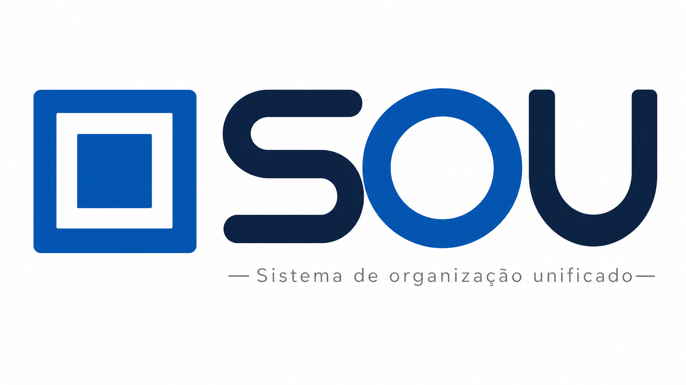
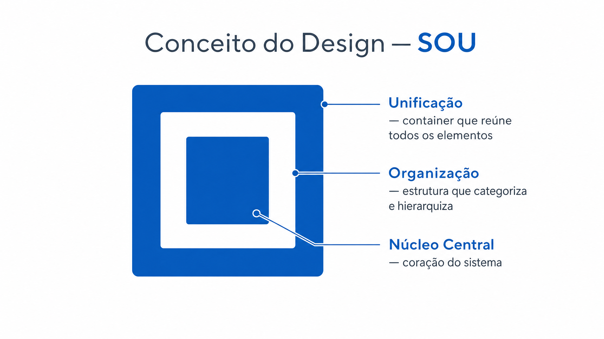
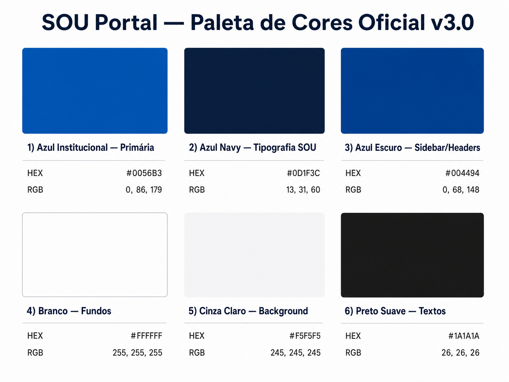
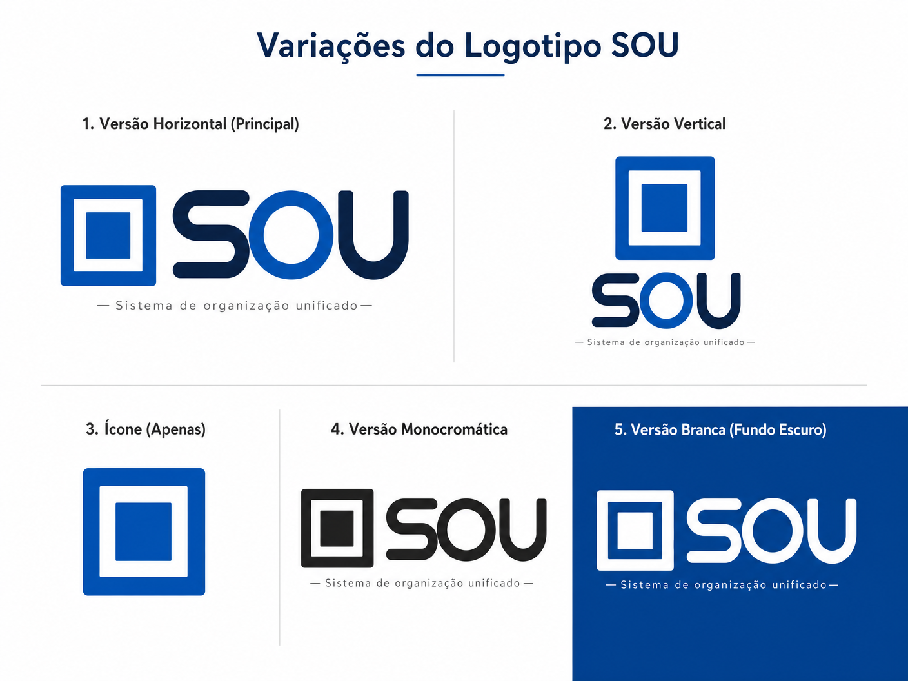
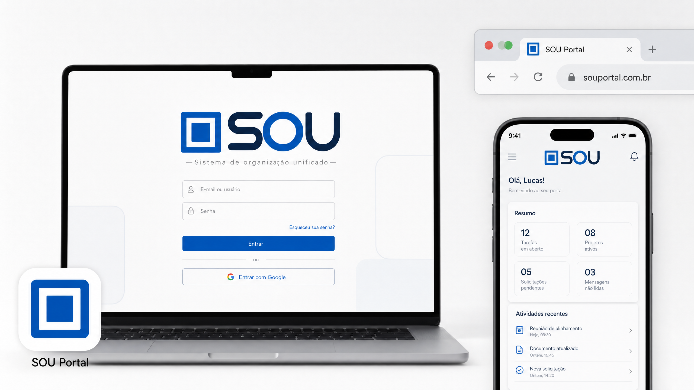

Sistema de Organização Unificado
Central unificada de documentação, contratos e acompanhamento técnico do desenvolvimento do CRM da Administradora Mutual.
Logo Principal

O logotipo do SOU Portal v3.0 é composto por dois elementos integrados: o símbolo gráfico (quadrados concêntricos) e a tipografia personalizada com as letras "SOU" em estilo display arredondado e a tagline "Sistema de organização unificado".
A tipografia foi atualizada na versão 3.0 para utilizar letras com traços arredondados e espessura uniforme, conferindo ao logotipo maior modernidade e personalidade. As letras "S" e "U" utilizam Azul Navy (#0D1F3C), enquanto o "O" central destaca-se em Azul Institucional (#0056B3), criando contraste visual e hierarquia.
Área de Proteção
A área de proteção do logotipo corresponde à altura da letra "O" em todas as direções. Nenhum elemento gráfico, texto ou imagem deve invadir essa área mínima de respiro ao redor do logotipo.
Área mínima de proteção = altura da letra "O"
Tamanho Mínimo
200px — Digital (recomendado)
120px — Mínimo digital
40mm — Mínimo impresso
Conceito do Design
O logo do SOU Portal foi desenvolvido para representar os três pilares fundamentais do sistema: Unificação, Organização e Núcleo Central. O símbolo dos quadrados concêntricos traduz visualmente a essência do sistema — camadas de informação convergindo para um ponto central de controle.
Simbolismo do Ícone

Unificação
O quadrado externo representa o container que reúne todos os elementos dispersos em um único sistema integrado.
Organização
A moldura branca simboliza a estrutura que separa, categoriza e hierarquiza informações de forma lógica.
Núcleo Central
O quadrado interno representa o coração do sistema onde toda informação crítica converge.
Anatomia da Tipografia
A tipografia do logotipo v3.0 utiliza letras display com terminais completamente arredondados e espessura de traço uniforme. Essa escolha transmite modernidade, acessibilidade e confiança — valores centrais do SOU Portal.
Azul Navy #0D1F3C
Traços arredondados
Azul Institucional #0056B3
Destaque e identidade
Azul Navy #0D1F3C
Base arredondada
Valores
Os valores do SOU Portal guiam todas as decisões de design, comunicação e desenvolvimento. Cada elemento visual foi concebido para refletir esses princípios fundamentais.
Unificação
Centralizar informações dispersas em uma única plataforma coesa, eliminando redundâncias e fragmentações operacionais.
Organização
Estruturar dados, documentos e processos de forma hierárquica e lógica, facilitando o acesso e a compreensão.
Transparência
Garantir visibilidade total sobre o andamento de projetos, contratos e cronogramas para todos os envolvidos.
Confiabilidade
Oferecer um sistema estável, seguro e auditável, onde cada informação possui rastreabilidade e integridade garantidas.
Eficiência
Reduzir o tempo gasto em tarefas administrativas repetitivas, liberando equipes para atividades de maior valor estratégico.
Acessibilidade
Tornar a informação acessível a todos os perfis de usuário, independentemente do nível de familiaridade tecnológica.
Paleta de Cores
A paleta de cores do SOU Portal v3.0 foi atualizada para incluir o Azul Navy (#0D1F3C), cor utilizada nas letras "S" e "U" do logotipo atualizado. As demais cores mantêm continuidade com a versão anterior, garantindo consistência em toda a aplicação.

Cores Primárias
Azul Institucional
#0056B3
RGB: 0, 86, 179
Ícone do logo, letra "O", botões primários, links e destaques.
Azul Navy
#0D1F3C
RGB: 13, 31, 60
Letras "S" e "U" do logotipo. Novo na v3.0.
Azul Escuro
#004494
RGB: 0, 68, 148
Sidebar, cabeçalhos, fundos de seções de destaque.
Cores Neutras e de Suporte
Branco
#FFFFFF
RGB: 255, 255, 255
Fundos de cards, texto em fundos escuros, espaço negativo do ícone.
Cinza Claro
#F5F5F5
RGB: 245, 245, 245
Fundo geral da aplicação, cards secundários.
Preto Suave
#1A1A1A
RGB: 26, 26, 26
Textos principais, títulos, corpo de texto.
Cores de Status
Verde Sucesso
#10B981
RGB: 16, 185, 129
Confirmações, status ativo, conclusão de etapas.
Amarelo Atenção
#F59E0B
RGB: 245, 158, 11
Alertas, pendências, itens que requerem atenção.
Vermelho Erro
#DC2626
RGB: 220, 38, 38
Erros críticos, alertas de segurança, exclusões.
Tipografia
A família tipográfica oficial do SOU Portal é a Inter (Google Fonts), utilizada em toda a interface do sistema. A Inter foi escolhida por sua excelente legibilidade em telas, suporte a múltiplos pesos e caráter neutro e profissional.
Inter Bold — 700
Títulos principais, seções de destaque, cabeçalhos de nível 1.
Inter SemiBold — 600
Subtítulos, labels de formulários, títulos de cards.
Inter Regular — 400
Corpo de texto, descrições, parágrafos gerais.
Inter Light — 300
Taglines, legendas, textos auxiliares e notas de rodapé.
Hierarquia Tipográfica
| Elemento | Tamanho | Peso | Uso |
|---|---|---|---|
| H1 — Título Principal | 48px | 700 Bold | Títulos de página, hero sections |
| H2 — Título de Seção | 36px | 700 Bold | Seções do manual, módulos do sistema |
| H3 — Subtítulo | 24px | 600 SemiBold | Subseções, títulos de cards |
| H4 — Título de Card | 20px | 600 SemiBold | Títulos internos de componentes |
| Body — Corpo | 16px | 400 Regular | Texto corrido, descrições |
| Small — Auxiliar | 14px | 400 Regular | Labels, metadados, notas |
| Caption — Legenda | 12px | 300 Light | Legendas de imagens, rodapés |
Tom de Voz
O tom de voz do SOU Portal é profissional, transparente e organizado, refletindo a promessa de unificação e clareza do sistema. Toda comunicação deve transmitir confiança e competência institucional.
✓ Profissional e Confiável
Linguagem formal e técnica quando apropriado, transmitindo expertise e seriedade institucional.
✓ Claro e Objetivo
Mensagens diretas e sem ambiguidades. Priorizar clareza sobre criatividade em contextos técnicos.
✓ Transparente e Acessível
Explicações quando necessário, sem presumir conhecimento técnico avançado do usuário.
✓ Organizado e Estruturado
Informações apresentadas de forma hierárquica e lógica, refletindo a promessa de organização.
O que Evitamos
✗ Linguagem informal ou casual
Mantemos postura profissional e séria, evitando gírias ou emojis excessivos.
✗ Jargões técnicos sem explicação
Quando usar termos técnicos, fornecemos contexto ou explicações claras.
✗ Mensagens ambíguas
Evitamos comunicação vaga ou que possa gerar múltiplas interpretações.
✗ Comunicação desorganizada
Nunca apresentamos informações de forma caótica ou sem estrutura lógica.
Exemplos Práticos
"O contrato foi atualizado com sucesso. A nova versão (v1.2) está disponível para visualização e download. Consulte o histórico de versões para comparar alterações."
"Opa! Seu contrato foi atualizado! 🎉 Dá uma olhada na nova versão!"
"Fase 1 do cronograma concluída. Próximo marco: Entrega do MVP (previsão: 12 semanas)."
"Conseguimos! Fase 1 finalizada! 🚀 Bora para a próxima!"
Variações e Aplicações
O SOU Portal possui diversas variações de logo para diferentes aplicações e formatos. Escolha a versão mais adequada para cada tipo de material e contexto de uso.
Versões do Logotipo

1. Horizontal (Principal)
Versão principal para cabeçalhos, assinaturas de e-mail e apresentações. Ícone à esquerda, tipografia à direita.
2. Vertical
Formato vertical para aplicações em espaços estreitos ou quadrados. Ícone acima, tipografia abaixo.
3. Ícone Isolado
Apenas os quadrados concêntricos para favicons, ícones de aplicativos e avatares de perfil.
4. Monocromático Preto
Versão em preto para impressão monocromática, documentos P&B ou aplicações de baixo contraste.
5. Versão Branca
Versão branca para fundos escuros, azuis ou coloridos. Manter contraste mínimo de 4.5:1.
Aplicações Digitais

Header da Aplicação
Logo horizontal, altura máxima 48px no header. Fundo branco ou azul escuro.
Fundo Escuro
Usar versão branca do logo em fundos azuis ou escuros. Nunca usar versão colorida sobre fundo escuro.
Favicon / App Icon
Ícone isolado: 16×16, 32×32, 48×48, 64×64, 512×512px. Formatos: ICO, PNG, SVG.
Aplicações em Papelaria
Especificações Técnicas
- Cartão de Visita: 90mm × 50mm, couché 300g fosco, impressão 4×4 cores
- Papel Timbrado: A4 (210×297mm), sulfite 90g branco, logo no cabeçalho superior esquerdo
- Envelope: 114mm × 162mm (C6), sulfite 90g branco, logo no canto superior esquerdo
- Assinatura de E-mail: Logo horizontal, máx. 200px de largura, formato PNG com fundo transparente
- Apresentações: Logo no canto superior esquerdo ou centralizado no slide de capa
Usos Incorretos
✗ Não distorcer proporções
✗ Não rotacionar o logo
✗ Não usar em fundos coloridos inadequados
✗ Não aplicar sombras ou efeitos
Downloads
Faça o download dos arquivos oficiais da marca SOU Portal v3.0 para uso autorizado em materiais institucionais, apresentações e aplicações digitais.
Logotipos v3.0
Todas as variações do logo em PNG (transparente), SVG (vetorial) e PDF (impressão).
Paleta de Cores v3.0
Arquivo CSS e JSON com todas as cores oficiais, incluindo o novo Azul Navy #0D1F3C.
Ativos Digitais
Favicon, avatar circular 512×512px e Open Graph 1200×630px atualizados para v3.0.
Manual Completo PDF
Manual da marca completo em PDF para distribuição interna e referência offline.